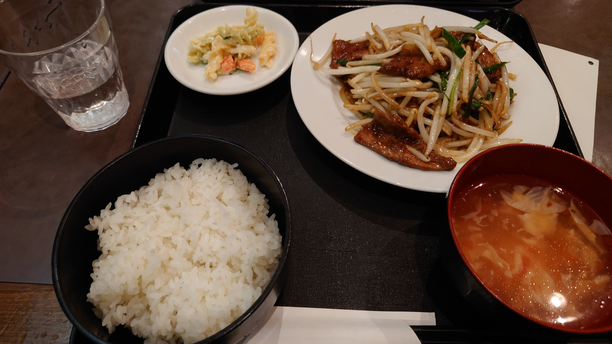
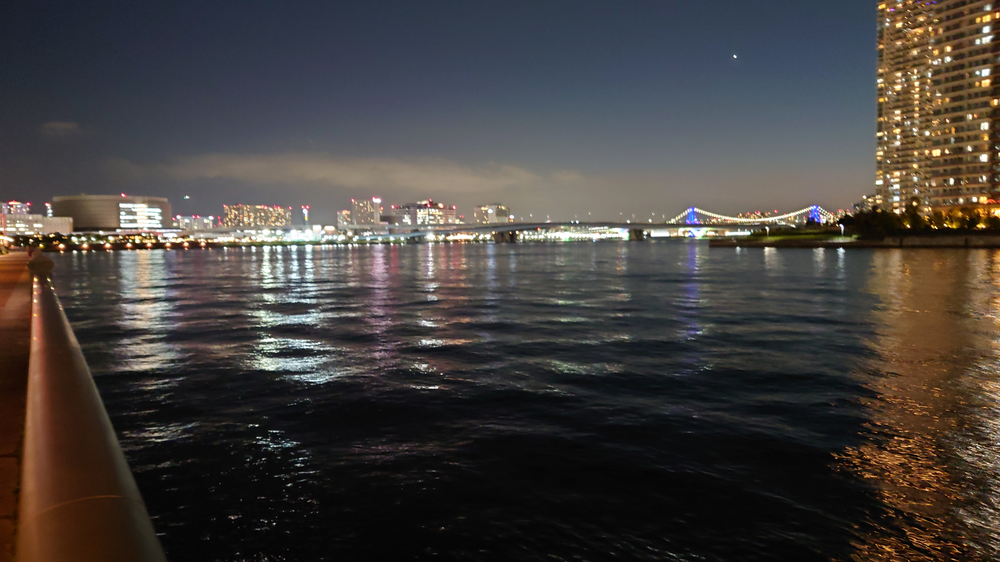

こんにちは、ザクザク食感です。
最近の日記です
10月31日
10月頭から1か月だけ派遣されていた常駐の仕事が終わった。
フルリモートでシステムのQAをする案件なので、毎日一人で坦々と作業をこなすだけの1か月だった。
最終日は貸与されていたPCを返却するために常駐先のオフィスに出社して、それまで一緒に働いていた客先の社員さんと初めて顔を合わせた。
早めに出社して待機していたら「ザクザクさ～ん」と声をかけられたので振り向くと、信じられないくらいのイケメンが立っていた。客先の上司だった。
立場に関係なく全員にため口を使うタイプのコミュ強の方なので予想はしていたけど、それを上回る超絶イケメンだった……
顔を知らない状態である程度話してから実際に会うと案外会話が盛り上がるもので、案件の愚痴などを話しているうちに打ち解けていく感覚があった。
昼過ぎになって、「せっかくなんでお昼行きましょうよ！」と言われた。
僕はもう社会人になって2年になるが、誰かと昼食を食べに行ったことが一度もなかった。
誘われることは何度かあったが、僕は自分から話しかけるのが苦手なうえに沈黙が怖くなるタイプなので、それを恐れてずっと断り続けていた。
そのために出社の日はお弁当をつくったり、昼休憩より少し早くオフィスを抜け出してビルとビルの隙間に逃げたりしていたが、今回はお弁当をつくっていないうえに周囲の地形に詳しくないので断る理由がなく、一緒にお昼を食べに行くことにした。
街中華に連れて行ってもらった。僕は基本的に外食しないしチェーン店以外には怖くては入れないので、初めての経験だった。

美味しいレバニラを初めて食べた。めちゃくちゃ美味しかった……
ご飯を食べ終わって、タバコを吸うか聞かれた。
完全に油断していて、「えっ、はい！」と答えた。
周りに喫煙者がいないらしく、かなり喜ばれた。僕の周りにも喫煙者はほぼいないし誰かとタバコを吸った経験が数えるくらいしかなくて、会社の人とは初めていわゆるタバコミュニケーションができてよかった。
でもこれが間違いだった！！！
急速に距離を詰められて、会社で役に立つことがどういうことかを延々説かれた。
僕は仕事が大嫌いで面倒にしないために仕事を早く片付けてサボるタイプなので、業務時間外に仕事の話なんてしたくなかった……
でも一応取引先の会社の社員なのでそんなことを言うわけにはいかず、聞き役に徹してやり過ごした。
興味がある話は延々聞いていたいタイプなので人の話を聞くのは好きなのだが、働きやすい環境づくりをどう形成するかなんて全く興味ないので苦痛だった。
その後も業務中に喫煙所に呼ばれたり、終業後にも喫煙所に連れて行ってもらったりして、そういう話を延々された……早くタイガキングダムしてGRAND POPを聴きながら帰りたかった……
結局LINEを交換することになり、夜中に僕の働きぶりのよかった点と改善すべき点とかが1000文字くらいの長文で送られてきて、マジでミスった……と思った。
11月8日
無職になった。
解雇されたとかではなく、次に入る予定だった案件にスキル不足で入れなかったので、完全にやることがなくなった。
客先はフロントエンドエンジニアが欲しいから僕が提案されたはずなのに、面接で「フォトショップ使えますか？」と聞かれて「触れたことはありませんが弊社の研修を受けることは可能です」みたいなことを答えたら、「デザイン含めて一人で完遂できる人材が欲しいんですよね～」と言われた。
アドビアンチで動画編集にAviutlを使っていた弊害がこんなところで出るなんて；；
でもFigmaすら使ったことがないのはたしかに良くない気がするので勉強すべきだと思うけど、こういうのって普通会社からアカウント貸与されて勉強できるもんじゃないの！？
愚痴を言っていても仕方なくて、営業の人が次の案件を取ってくるまでは待機するしかない。
会社的にはこの期間に他の技術の勉強をしてスキルを上げるべきなんだろうけど、僕が今まで勉強してわかったのは勉強が嫌いだということだけなので、何もする気が起きない。
基本的に在宅なので、9時に出勤ボタンを押して朝会に出て、18時に退勤ボタンを押してタイガキングダムすれば一日の業務が終わる。
こんなに楽な仕事がありますか！？最高～！！！
と思っていたけど、いざやることがなくなると結構精神的に来る。仕事が嫌いなはずなのに仕事がなくなるのも嫌とか、本当にめんどくさい人間すぎて早く死ねば？と思う。
この有り余る時間を使って絵を描いたり曲をつくったりしようとしても、こういうときに限って何も降ってこない。やはり僕は抑圧されていなければ何も生みだすことができない……
今日は久々にやることがあって、出社して講演会と総会に参加しなければいけなかった。
どちらも強制的に入れられた業務で、自分から参加しようとしたものではない。要はサクラをやる仕事だった。
講演会ではVue.jsで時計を実装する様子を延々見せられた。観客も20人ぐらいしかいなくて雰囲気も冷え冷えだし、めちゃくちゃ退屈だった。
主催した人事の人だけが写真を撮ったりしてノリノリだった。多分人事の人が講演会を実施した実績をつくって評価を上げたいだけだったんだと思う。マジのサクラじゃん……
総会では前期頑張った社員の表彰があった。
今何の案件にも就いていない状態なのにバリバリ働いている人の実績を延々見せられて、かなり苦痛だった。仕事なんてどれだけ楽できるかのバトルだと思っていたし、何もしなくてもお金が入ってくる今の僕の状態はその理想形のはずなのに、頑張っている人の姿を見て普通に食らった。
僕って何がしたいんだ……いつもどっちつかずで、生きたいのか死にたいのかはっきりしなくて本当にダサい！！！
総会の後懇親会が開催されるようだったが、当然逃げ出した。
業務時間中だったが海を見に行った。

携帯を見ると、前述した前の案件の上司から「新しいところはどうですかー？」というLINEが来ていた。
何も返信できなかった。
それでは、さようなら。